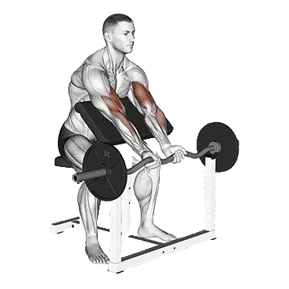

Curl pupitre
Curl pupitre permet de consulter la charge moyenne et les standards de force comme repères pour bras. Les muscles principaux sont Biceps brachial.

Poids moyen : Intermédiaire
Repère pour une personne de niveau intermédiaire.
Hommes
101 lb
Femmes
58 lb
Poids moyen de Curl pupitre [1RM]
| Niveau | ||
|---|---|---|
| Débutant | 37 lb | 15 lb |
| Novice | 65 lb | 32 lb |
| Intermédiaire | 101 lb | 58 lb |
| Avancé | 146 lb | 90 lb |
| Élite | 197 lb | 127 lb |
Note : ces standards sont des estimations de 1RM basées sur des pratiquants moyens. Ils peuvent varier selon le poids de corps, l'âge et d'autres facteurs personnels. Consulte les données détaillées dans le tableau ci-dessous.
Standards de force de Curl pupitre (lb)
Hommes par poids de corps (lb) [1RM]
| Poids de corps | Débutant | Novice | Intermédiaire | Avancé | Élite |
|---|---|---|---|---|---|
| 110 | 19 | 39 | 66 | 101 | 140 |
| 120 | 23 | 43 | 72 | 108 | 149 |
| 130 | 26 | 48 | 78 | 115 | 158 |
| 140 | 29 | 52 | 83 | 122 | 166 |
| 150 | 32 | 56 | 89 | 128 | 173 |
| 160 | 35 | 61 | 94 | 135 | 180 |
| 170 | 39 | 65 | 99 | 141 | 187 |
| 180 | 42 | 69 | 104 | 146 | 194 |
| 190 | 45 | 72 | 108 | 152 | 200 |
| 200 | 48 | 76 | 113 | 157 | 206 |
| 210 | 50 | 80 | 117 | 163 | 212 |
| 220 | 53 | 83 | 122 | 168 | 218 |
| 230 | 56 | 87 | 126 | 172 | 224 |
| 240 | 59 | 90 | 130 | 177 | 229 |
| 250 | 61 | 93 | 134 | 182 | 234 |
| 260 | 64 | 97 | 138 | 186 | 239 |
| 270 | 67 | 100 | 141 | 191 | 244 |
| 280 | 69 | 103 | 145 | 195 | 249 |
| 290 | 72 | 106 | 149 | 199 | 254 |
| 300 | 74 | 109 | 152 | 203 | 258 |
| 310 | 76 | 112 | 156 | 207 | 263 |
Hommes par âge [1RM]
| Âge | Débutant | Novice | Intermédiaire | Avancé | Élite |
|---|---|---|---|---|---|
| 15 | 32 | 55 | 86 | 124 | 167 |
| 20 | 36 | 63 | 99 | 142 | 192 |
| 25 | 37 | 65 | 101 | 146 | 197 |
| 30 | 37 | 65 | 101 | 146 | 197 |
| 35 | 37 | 65 | 101 | 146 | 197 |
| 40 | 37 | 65 | 101 | 146 | 197 |
| 45 | 35 | 61 | 96 | 139 | 186 |
| 50 | 33 | 58 | 90 | 130 | 175 |
| 55 | 31 | 53 | 83 | 120 | 162 |
| 60 | 28 | 49 | 76 | 110 | 148 |
| 65 | 25 | 44 | 69 | 99 | 134 |
| 70 | 23 | 39 | 62 | 89 | 120 |
| 75 | 20 | 35 | 55 | 80 | 107 |
| 80 | 18 | 32 | 49 | 71 | 96 |
| 85 | 16 | 28 | 44 | 64 | 86 |
| 90 | 15 | 25 | 40 | 58 | 77 |
Femmes par poids de corps (lb) [1RM]
| Poids de corps | Débutant | Novice | Intermédiaire | Avancé | Élite |
|---|---|---|---|---|---|
| 90 | 6 | 16 | 34 | 58 | 86 |
| 100 | 8 | 20 | 39 | 64 | 94 |
| 110 | 10 | 23 | 43 | 69 | 101 |
| 120 | 12 | 26 | 47 | 75 | 107 |
| 130 | 14 | 29 | 51 | 80 | 113 |
| 140 | 16 | 32 | 55 | 85 | 119 |
| 150 | 18 | 35 | 59 | 90 | 125 |
| 160 | 20 | 38 | 63 | 94 | 130 |
| 170 | 22 | 41 | 66 | 98 | 135 |
| 180 | 24 | 43 | 70 | 103 | 140 |
| 190 | 26 | 46 | 73 | 107 | 145 |
| 200 | 28 | 49 | 76 | 111 | 149 |
| 210 | 30 | 51 | 80 | 114 | 153 |
| 220 | 32 | 53 | 83 | 118 | 158 |
| 230 | 33 | 56 | 86 | 122 | 162 |
| 240 | 35 | 58 | 88 | 125 | 166 |
| 250 | 37 | 60 | 91 | 128 | 170 |
| 260 | 39 | 63 | 94 | 132 | 173 |
Femmes par âge [1RM]
| Âge | Débutant | Novice | Intermédiaire | Avancé | Élite |
|---|---|---|---|---|---|
| 15 | 13 | 28 | 49 | 76 | 108 |
| 20 | 15 | 32 | 56 | 87 | 124 |
| 25 | 15 | 32 | 58 | 90 | 127 |
| 30 | 15 | 32 | 58 | 90 | 127 |
| 35 | 15 | 32 | 58 | 90 | 127 |
| 40 | 15 | 32 | 58 | 90 | 127 |
| 45 | 14 | 31 | 55 | 85 | 121 |
| 50 | 14 | 29 | 51 | 80 | 113 |
| 55 | 13 | 27 | 47 | 74 | 105 |
| 60 | 11 | 24 | 43 | 67 | 96 |
| 65 | 10 | 22 | 39 | 61 | 86 |
| 70 | 9 | 20 | 35 | 55 | 77 |
| 75 | 8 | 18 | 31 | 49 | 69 |
| 80 | 7 | 16 | 28 | 44 | 62 |
| 85 | 7 | 14 | 25 | 39 | 56 |
| 90 | 6 | 13 | 23 | 35 | 50 |
Note : une barre standard de salle de sport pèse généralement 44 lb.
Muscles ciblés
| Groupe | Muscles |
|---|---|
| Muscles principaux | Biceps brachial |
| Muscles secondaires | Fléchisseurs de l'avant-bras |
| Stabilisateurs | Aucun |
| Prise | Aucun |
Suivi et analyse dans l'app Shiba
Consultez poids, répétitions et progression au même endroit.
Comment lire le tableau
| Niveau | Description | Répartition |
|---|---|---|
| Débutant | Maîtrise la bonne technique et s'entraîne régulièrement depuis au moins 1 mois. | Bas 5% |
| Novice | S'entraîne régulièrement depuis au moins 6 mois. | Top 80% |
| Intermédiaire | S'entraîne régulièrement depuis au moins 2 ans. | Top 50% |
| Avancé | S'entraîne régulièrement depuis plus de 5 ans. | Top 20% |
| Élite | S'entraîne spécifiquement sur cet exercice depuis plus de 5 ans. | Top 5% |
Autres exercices
Bras
Biceps curl à la poulie
Bras / Poulie
Curl concentration aux haltères
Bras / Haltères
Curl incliné aux haltères
Bras / Haltères
Biceps curl à la machine
Bras / Machine
Curl strict
Bras
Biceps curl unilatéral à la poulie
Bras / Poulie
Pupitre curl unilatéral aux haltères
Bras / Haltères
Curl marteau incliné
Bras
Spider curl
Bras
Curl Zottman
Bras
Assis curl aux haltères
Bras / Haltères
Cheat curl
Bras